三、 基于标签的推荐系统
一个用户标签行为的数据集一般由一个三元组的集合表示，其中记录(u, i, b) 表示用户u给物品i打上了标签b。当然，用户的真实标签行为数据远远比三元组表示的要复杂。
1. 实验设置
数据集：Delicious和CiteULike的两个数据集。
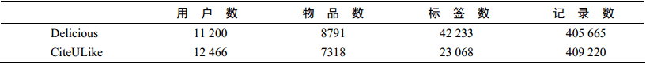
将数据集随机分成10份，挑选1份作为测试集，剩下的9份作为训练集，通过学习训练集中的用户标签数据预测测试集上用户会给什么物品打标签。
对于用户u，令R(u)为给用户u的长度为N的推荐列表，里面包含我们认为用户会打标签的物品。令T(u)是测试集中用户u实际上打过标签的物品集合。
我们利用准确率（precision）和召回率（recall）评测个性化推荐算法的精度。
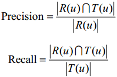
覆盖率：
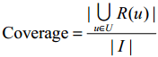
多样性：
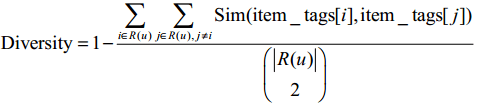
多样性的定义取决于相似度的定义，我们用物品标签向量的余弦相似度度量物品之间的相似度。对于每个物品i，item_tags[i]存储了物品i的标签向量，其中item_tags[i][b]是对物品i打标签b的次数。
推荐系统的多样性为所有用户推荐列表多样性的平均值。
新颖性：
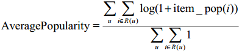
这里的新颖性，我们简单地用推荐结果的平均热门程度（AveragePopularity）度量。对于物品i，定义它的流行度item_pop(i)为给这个物品打过标签的用户数。而对推荐系统，我们就用AveragePopularity来定义。
2. 一个最简单的算法
算法描述：
a. 统计每个用户最常用的标签
b. 对于每个标签，统计被打过这个标签次数最多的物品
c. 对于一个用户，首先找到他常用的标签，然后找到具有这些标签的最热门物品推荐给这个用户
对于上面的算法，用户u对物品i的兴趣公式如下：
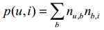
B(u)是用户u打过的标签集合， B(i)是物品i被打过的标签集合，nu,b是用户u打过标签b的次数，nb,i是物品i被打过标签b的次数。
算法评测结果：
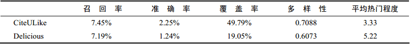
3. 算法的改进
(1) TF-IDF
前面这个公式倾向于给热门标签对应的热门物品很大的权重，因此会造成推荐热门的物品给用户，从而降低推荐结果的新颖性。这里我们可以借鉴TF-IDF的思想，对这一公式进行改进：
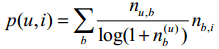
nb记录了标签b被多少个不同的用户使用过。这个算法记为TagBasedTFIDF。
TagBasedTFIDF在Delicious和CiteULike两个数据集上的离线实验性能：
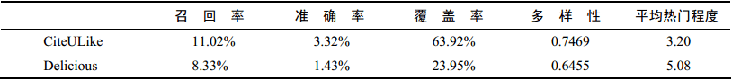
同理，我们也可以借鉴TF-IDF的思想对热门物品进行惩罚，从而得到如下公式：
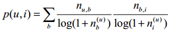
ni记录了物品i被多少个不同的用户打过标签。这个算法记为TagBasedTFIDF++。
TagBasedTFIDF++算法的离线实验性能。和TagBasedTFIDF算法相比，除了多样
性有所下降，其他指标都有明显提高：
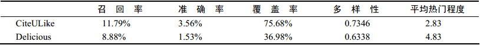
(2) 数据稀疏性
在前面的算法中，用户兴趣和物品的联系是通过 u ,i,b 中的标签建立的。但是，对于新用户或者新物品，这个集合中的标签数量会很少。为了提高推荐的准确率，我们可能要对标签集合做扩展，比如若用户曾经用过“推荐系统”这个标签，我们可以将这个标签的相似标签也加入到用户标签集合中，比如“个性化”、“协同过滤”等标签。
进行标签扩展有很多方法，其中常用的有话题模型（topic model），这里遵循简单的原则介绍一种基于邻域的方法。
标签扩展的本质是对每个标签找到和它相似的标签，也就是计算标签之间的相似度。
对于标签b，令N(b)为有标签b的物品的集合，nb,i为给物品i打上标签b的用户数，我们可以通过如下余弦相似度公式计算标签b和标签b’的相似度：
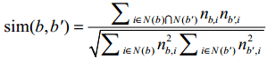
实验评测：
对于曾经打过的标签数少于20的用户，我们找到其所打标签的相关标签，然后将这些标签聚合排序，将排序结中前20个标签作为用户相关的标签。表4-8展示了考虑标签扩展后的推荐算法性能。经过结果对比，进行标签扩展确实能够提高基于标签的物品推荐的准确率和召回率，但可能会稍微降低推荐结果的覆盖率和新颖度：
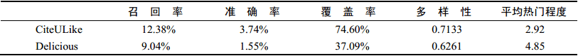
(3) 标签清理
标签的表义问题。首先，这些标签不能包含没有意义的停止词或者表示情绪的词，其次这些推荐解释里不能包含很多意义相同的词语。标签清理的一个重要意义在于将标签作为推荐解释。
一般来说有如下标签清理方法：
a. 去除词频很高的停止词
b. 去除因词根不同造成的同义词，比如 recommender system和recommendation system
c. 去除因分隔符造成的同义词，比如 collaborative_filtering和collaborative-filtering
d. 为了控制标签的质量，很多网站也采用了让用户进行反馈的思想
4. 基于图的推荐算法
我们需要定义3种不同的顶点，即用户顶点、物品顶点和标签顶点。然后，如果我们得到一个表示用户u给物品i打了标签b的用户标签行为(u,i,b)，最自然的想法就是在图中增加3条边。首先需要在用户u对应的顶点v(u)和物品i对应的顶点v(i)之间增加一条边（如果这两个顶点已经有边相连，那么就应该将边的权重加1） ，同理，在v(u)和v(b)之间需要增加一条边，v(i)和v(b)之间也需要边相连接。
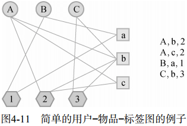
(1) 用图模型解释前面的简单算法
SimpleTagGraph：给定用户标签行为记录(u,i,b)，SimpleTagGraph会增加两条有向边，一条由用户节点v(u)指向标签节点v(b)，另一条由标签节点v(b)指向物品节点v(i)。从这个定义可以看到，SimpleTagGraph相对于前面提到用户—物品—标签图少了用户节点和物品节点之间的边。
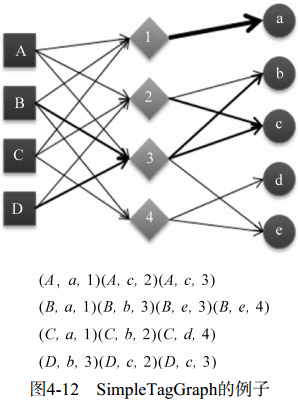
在构建了SimpleTagGraph后，利用前面的PersonalRank算法，令K = 1，并给出不同边权重的定义，就等价于前面提出的简单推荐算法。
5. 基于标签的推荐解释
基于标签的推荐其最大好处是可以利用标签做推荐解释，这方面的代表性应用是豆瓣的个性化推荐系统（标签云的应用丰富了推荐结果的多样性，同时也作为一种推荐解释呈现给用户）。
(1) 4种推荐解释方式及其问卷评测
a. RelSort
b. PrefSort
c. RelOnly
d. PrefOnly
问卷评测结果：（略）
通过问卷调查结果，作者得出了以下结论：
a. 用户对标签的兴趣对帮助用户理解为什么给他推荐某个物品更有帮助
b. 用户对标签的兴趣和物品标签相关度对于帮助用户判定自己是否喜欢被推荐物品具有同样的作用
c. 物品标签相关度对于帮助用户判定被推荐物品是否符合他当前的兴趣更有帮助
d. 客观事实类标签相比主观感受类标签对用户更有作用
四、 给用户推荐标签
当用户浏览某个物品时，标签系统非常希望用户能够给这个物品打上高质量的标签，这样才能促进标签系统的良性循环。因此，很多标签系统都设计了标签推荐模块给用户推荐标签。
1. 为什么要给用户推荐标签
a. 方便用户输入标签
b. 提高标签质量
2. 如何给用户推荐标签（4种方法）
a. 给用户u推荐整个系统里最热门的标签（PopularTags算法）
b. 给用户u推荐物品i上最热门的标签（ItemPopularTags算法）
c. 给用户u推荐他自己经常使用的标签（UserPopularTags算法）
d. 方法b和方法c的线性加权结果（HybridPopularTags算法）
3. 实验设置
和前面的实验一样，我们用同样的方法将数据集按照9∶1（N=10）分成训练集和测试集，然后通过训练集学习用户标注的模型。要注意这里切分数据集不再是以user、item为主键，而是以user、item、tag为主键。
对于测试集中的每一个用户物品对(u,i)，我们都会推荐N个标签给用户u作参考。令R(u,i)为我们给用户u推荐的应该在物品i上打的标签集合，令T(u,i)为用户u实际给物品i打的标签的集合，我们可以利用准确率和召回率评测标签推荐的精度：
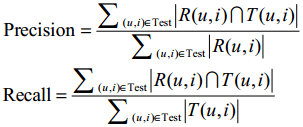
PopularTags、UserPopularTags、ItemPopularTags 3种算法评测结果：
ItemPopularTags具有最好的准确率和召回率，这一点和直观想法是符合的。
因为用户的兴趣是广泛的，假设用户对编程和武侠小说有兴趣，那么用户在给一本武侠小说打标签时，肯定不会参考自己对编程书打的标签，而会更多地参考关于武侠小说的常用标签。因此ItemPopularTags肯定比UserPopularTags的精度要高。
HybridPopularTags算法的单独测评（不同线性融合系数a下的准确率和召回率）：
在α=0.8的时候，HybridPopularTags取得了最好的准确度（准确率=25.15%，召回率=68.30%）。而且这个精度超过了单独的ItemPopularTags和UserPopularTags算法的精度。考虑到近70%的精度已经很高了，因此很多应用在给用户推荐标签时会直接给出用户最常用的标签，以及物品最经常被打的标签。
4. 基于图的标签推荐算法
在根据用户打标签的行为生成图之后（上述的基于图的推荐算法），我们可以利用PersonalRank算法进行排名。但这次遇到的问题和之前不同。这次的问题是，当用户u遇到物品i时，会给物品i打什么样的标签。因此，我们可以重新定义顶点的启动概率：
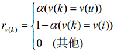
也就是说，只有用户u和物品i对应的顶点有非0的启动概率，而其他顶点的启动概率都为0。在上面的定义中，v(u)和v(i)的启动概率并不相同，v(u)的启动概率是a，而v(i)的启动概率是1-a。参数α可以通过离线实验选择。
五、 扩展阅读
a. 张量分解
b. 基于LDA的算法
c. 基于图的算法